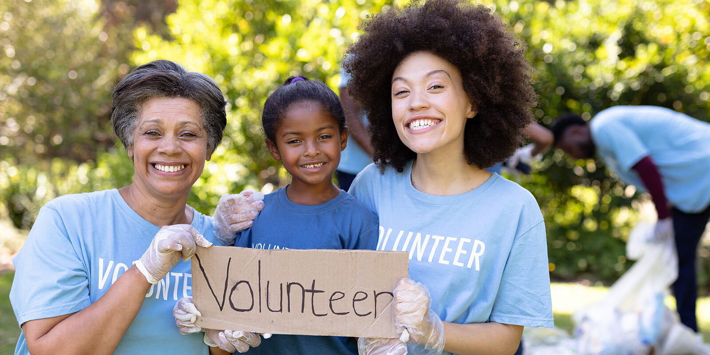

Gap Year, Internships, Volunteering
"Whether they spend the year traveling, volunteering, working, or all three, students who have completed a gap year are often revitalized for their return to the academic world the following year. According to David Hawkins, director of public policy and research at the National Association for College Admission Counseling, taking a gap year '..could actually help students succeed in college' since participants may be more focused, mature, and motivated for their undergraduate experience."
- The Princeton Review, "Things to Consider before taking a Gap Year"